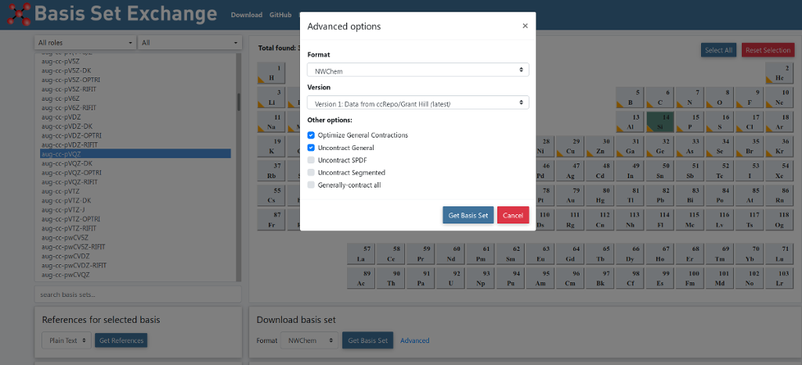

Basis sets¶
NWChem currently supports basis sets consisting of generally contracted Cartesian Gaussian functions up to a maximum angular momentum of six (h functions), and also sp (or L) functions. The BASIS directive is used to define these, and also to specify use of an Effective Core Potential that is associated with a basis set.
The basis functions to be used for a given calculation can be drawn from a standard set in the Basis set library that is included in the release of NWChem. Alternatively, the user can specify particular functions explicitly in the input, to define a particular basis set.
The general form of the BASIS directive is as follows:
BASIS [<string name default "ao basis">] \
[(spherical || cartesian) default cartesian] \
[(print || noprint) default print]
[rel]
<string tag> library [<string tag_in_lib>] \
<string standard_set> [file <filename>] \
[except <string tag list>] [rel]
...
<string tag> <string shell_type> [rel]
<real exponent> <real list_of_coefficients>
...
END
Examining the keywords on the first line of the BASIS directive:
-
name:
By default, the basis set is stored in the database with the name “ao basis”. Another name may be specified in the BASIS directive, thus, multiple basis sets may be stored simultaneously in the database. Also, the DFT and RI-MP2 modules and the Dyall-modified-Dirac relativistic method require multiple basis sets with specific names. The user can associate the “ao basis” with another named basis using the SET directive (see SET). -
SPHERICAL or CARTESIAN
The keywords spherical and cartesian offer the option of using either spherical-harmonic (5 d, 7 f, 9 g, …) or Cartesian (6 d, 10 f, 15 g, …) angular functions. The default is Cartesian. Note that the correlation-consistent basis sets were designed using spherical harmonics and to use these, the spherical keyword should be present in the BASIS directive. The use of spherical functions also helps eliminate problems with linear dependence.
| Cartesian | Spherical | |
|---|---|---|
| 1 | s | s |
| 1 | px | px |
| 2 | py | py |
| 3 | pz | pz |
| 1 | dxx | dxy |
| 2 | dxy | dyz |
| 3 | dxz | dz2-x2-y2 |
| 4 | dyy | dxz |
| 5 | dyz | dx2-y2 |
| 6 | dzz | |
| 1 | fxxx | fxxy-yyy |
| 2 | fxxy | fxyz |
| 3 | fxxz | fyzz-xxy-yyy |
| 4 | fxyy | fzzz-xxz-yyz |
| 5 | fxyz | f-xzz+xxx+xyy |
| 6 | fxzz | fxxz-yyz |
| 7 | fyyy | fxyy-xxx |
| 8 | fyyz | |
| 9 | fyzz | |
| 10 | fzzz |
Order of functions.
PRINTorNOPRINT:
The default is for the input module to print all basis sets encountered. Specifying the keyword noprint allows the user to suppress this output.
REL:
This keyword marks the entire basis as a relativistic basis for the purposes of the Dyall-modified-Dirac relativistic integral code. The marking of the basis set is necessary for the code to make the proper association between the relativistic shells in the ao basis and the shells in the large and/or small component basis. This is only necessary for basis sets which are to be used as the ao basis. The user is referred to the section on Dyall’s modified Dirac-Hamiltonian approximation for more details.
Basis sets are associated with centers by using the tag of a center in a geometry that has either been input by the user or is available elsewhere. Each atom or center with the same tag will have the same basis set. All atoms must have basis functions assigned to them – only dummy centers (X or Bq) may have no basis functions. To facilitate the specification of the geometry and the basis set for any chemical system, the matching process of a basis set tag to a geometry tag first looks for an exact match. If no match is found, NWChem will attempt to match, ignoring case, the name or symbol of the element. E.g., all hydrogen atoms in a system could be labeled “H1”, “H2”, …, in the geometry but only one basis set specification for “H” or “hydrogen” is necessary. If desired, a special basis may be added to one or more centers (e.g., “H1”) by providing a basis for that tag. If the matching mechanism fails then NWChem stops with an appropriate error message.
A special set of tags, “*” and tags ending with a “*” (E.g. “H*“) can be used in combination with the keyword library. These tags facilitate the definition of a certain type of basis set of all atoms, or a group of atoms, in a geometry using only a single or very few basis set entries. The “*” tag will not place basis sets on dummy atoms, Bq* can be used for that if necessary.
Examined next is how to reference standard basis sets in the basis set library, and finally, how to define a basis set using exponents and coefficients.
Basis set library¶
The keyword library associated with each specific tag entry specifies
that the calculation will use the standard basis set in NWChem for that
center. The variable
The general form of the input line requesting basis sets from the NWChem basis set library is:
<string tag> library [<string tag_in_lib>] \
<string standard set> [file < filename> \
[except <string tag list>] [rel]
...
For example, the NWChem basis set library contains the Dunning cc-pvdz basis set. These may be used as follows
basis
oxygen library cc-pvdz
hydrogen library cc-pvdz
end
A default path of the NWChem basis set libraries is provided on installation of the code, but a different path can be defined by specifying the keyword file, and one can explicitly name the file to be accessed for the basis functions. For example,
basis
o library 3-21g file /usr/d3g681/nwchem/library
si library 6-31g file /usr/d3g681/nwchem/libraries/
end
This directive tells the code to use the basis set 3-21g in the file /usr/d3g681/nwchem/library for atom o and to use the basis set 6-31g in the directory /usr/d3g681/nwchem/libraries/ for atom si, rather than look for them in the default libraries. When a directory is defined the code will search for the basis set in a file with the name 6-31g.
The “*” tag can be used to efficiently define basis set input directives for large numbers of atoms. An example is:
basis
* library 3-21g
end
This directive tells the code to assign the basis sets 3-21g to all the atom tags defined in the geometry. If one wants to place a different basis set on one of the atoms defined in the geometry, the following directive can be used:
basis
* library 3-21g except H
end
This directive tells the code to assign the basis sets 3-21g to all the atoms in the geometry, except the hydrogen atoms. Remember that the user will have to explicitly define the hydrogen basis set in this directive! One may also define tags that end with a “*“:
basis
oxy* library 3-21g
end
This directive tells the code to assign the basis sets 3-21g to all atom tags in the geometry that start with “oxy”.
If standard basis sets are to be placed upon a dummy center, the
variable bqo and bqh respectively, the BASIS
directive is as follows:
basis
o library cc-pvdz
h library cc-pvdz
bqo library o cc-pvdz
bqh library h cc-pvdz
end
A special dummy center tag is bq*, which will assign the same basis set
to all bq centers in the geometry. Just as with the * tag, the except
list can be used to assign basis sets to unique dummy centers.
The library basis sets can also be marked as relativistic by adding the
rel keyword to the tag line. See the section on relativistic
all-electron
approximations
for more details. The correlation consistent basis sets have been
contracted for relativistic effects and are included in the standard
library.
There are also contractions in the standard library for both a point nucleus and a finite nucleus of Gaussian shape. These are usually distinguished by the suffix _pt and _fi. It is the user’s responsibility to ensure that the contraction matches the nuclear type specified in the geometry object. The specification of a finite nucleus basis set does NOT automatically set the nuclear type for that atom to be finite. See Geometries for information.
How to use basis files from https://www.basissetexchange.org (NEW in 2019)¶
In order to ensure compatibility with the existing basis libraries available in NWChem, we suggest the user to
select the “Advanced Options” menu and tick the boxes “Optimize General Contractions” and “Uncontract General”,
as in the image below,
when downloading basis files from www.basissetexchange.org

As an alternative, basis set files downloaded from the basissetexchange.org website are available in the NWChem source code (after release 7.0.0). In order to switch from the default basis libraries to the library formed by files downloaded from www.basissetexchange.org, the following environment variable setting is required
NWCHEM_BASIS_LIBRARY=$NWCHEM_TOP/src/basis/libraries.bse/
Explicit basis set definition¶
If the basis sets in the library or available in other external files are not suitable for a given calculation, the basis set may be explicitly defined. A generally contracted Gaussian basis function is associated with a center using an input line of the following form:
<string tag> <string shell_type> [rel]
<real exponent> <real list_of_coefficients>
...
The variable
The following example defines basis sets for the water molecule:
basis spherical
oxygen s
11720.0000 0.000710 -0.000160
1759.0000 0.005470 -0.001263
400.8000 0.027837 -0.006267
113.7000 0.104800 -0.025716
37.0300 0.283062 -0.070924
13.2700 0.448719 -0.165411
5.0250 0.270952 -0.116955
1.0130 0.015458 0.557368
0.3023 -0.002585 0.572759
oxygen s
0.3023 1.000000
oxygen p
17.7000 0.043018
3.8540 0.228913
1.0460 0.508728
0.2753 0.460531
oxygen p
0.2753 1.000000
oxygen d
1.1850 1.000000
hydrogen s
13.0100 0.019685
1.9620 0.137977
0.4446 0.478148
0.1220 0.501240
hydrogen s
0.1220 1.000000
hydrogen p
0.7270 1.000000
oxygen s
0.01 1.0
hydrogen s
0.02974 1.0
hydrogen p
0.141 1.0
end
Explicit basis set specifications are available from the basis set exchange.
Combinations of library and explicit basis set input¶
The user can use a mixture of library basis and explicit basis set input to define the basis sets used on the various atoms.
For example, the following BASIS directive augments the Dunning cc-pvdz basis set for the water molecule with a diffuse s-shell on oxygen and adds the aug-cc-pVDZ diffuse functions onto the hydrogen.
basis spherical
oxygen library cc-pvdz
hydrogen library cc-pvdz
oxygen s
0.01 1.0
hydrogen library "aug-cc-pVDZ Diffuse"
end
The resulting basis set defined is identical to the one defined above in the explicit basis set input.